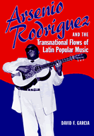

<body bgcolor="#FFFFFF" text="#000000" link="#0000FF" vlink="#CC0000" alink="#CC0000"><center><hr width="350" size="1" align="center" noshade>The life and times of one of Cuba's most important musicians<hr width="350" size="1" align="center" noshade><p><a href="https://cdcshoppingcart.uchicago.edu/Cart/ChicagoBook.aspx?ISBN=9781592133857&&PRESS=temple" target="_top">Buy this book!</a> | <a href="https://cdcshoppingcart.uchicago.edu/Cart/Cart.aspx?PRESS=temple" target="_top">View Cart</a> | <a href="https://cdcshoppingcart.uchicago.edu/Cart/Cart.aspx?PRESS=temple" target="_top">Check Out</a></p><p></p></center><!--none//--><h1>Arsenio Rodríguez and the Transnational Flows of Latin Popular Music</h1>
<h3>David F. García</h3>
<P>cloth 1-59213-385-1 $85.50, Jun 06, <FONT COLOR=#990033>Available</FONT>
<br>paper 1-59213-386-X $30.95, Jun 06, <FONT COLOR=#990033>Available</FONT>
<br>Electronic Book 1-59213-387-8 $30.95 <FONT COLOR=#990033>Available</FONT>
<BR> 224 pp
6x9
5&nbsp;tables 18&nbsp;figures 12&nbsp;halftones
</P><h3 align="center"><P><font color="#996633">Certificate of Merit for Best Research in Recorded Folk, Ethnic, or World
Music from the Association for Recorded Sound,
2007</font></P>
</H3>
<BLOCKQUOTE><I>"Arsenio Rodríguez was responsible for crucial developments in Latin music's most important musical genres, </i>son montuno<i>, mambo and salsa, but his accomplishments have never received the attention they deserve. This fascinating book explores Arsenio's place in the trajectory of Cuban music from pre-revolutionary Cuba to New York, Los Angeles and beyond, giving Arsenio his due not only as an extraordinarily creative musician but as a life-long participant in anti-racist struggles. It is a model of interdisciplinary scholarship, giving equal attention to the historical context and musicological structures that gave Arsenio's music its power and meaning."</i>
<br>&#151;<b>Deborah Pacini</b>, Director of American and Latino Studies Programs and Associate Professor of Anthropology, Tufts University<i></I></BLOCKQUOTE>
<p>Arsenio Rodríguez was one of the most important Cuban musicians of the twentieth century. In this first scholarly study, ethnomusicologist David F. García examines Rodríguez's life, including the conjunto musical combo he led and the highly influential son montuno style of music he created in the 1940s. García recounts Rodríguez's battle for recognition at the height of "mambo mania" in New York City and the significance of his music in the development of salsa. With firsthand accounts from relatives and fellow musicians, <i>Arsenio Rodríguez and the Transnational Flows of Latin Popular Music</i> follows Rodríguez's fortunes on several continents, speculating on why he never enjoyed wide commercial success despite the importance of his music.
<p>García focuses on the roles that race, identity, and politics played in shaping Rodríguez's music and the trajectory of his musical career. His transnational perspective has important implications for Latin American and popular music studies.
<BR>&nbsp;<h2>Excerpt</h2><P>Excerpt available at <a href="http://www.temple.edu/tempress">www.temple.edu/tempress</a></p>
<BR>&nbsp;<h2>Reviews</h2>
<p><i>"A major contribution to the study of Latin American music and music in general. Its audience will range from scholars to the general public interested in Afro-Cuban music and popular music traditions, especially those of Latin America and related music in the U.S. Rodríguez is very deserving of a book on his musical life and stylistic innovation of the Cuban </i>son<i> and its indelible effect on Latin music. García pays homage and respect to his subject and has developed some extremely rich data and intricate analysis on the musical legacy of Arsenio Rodríguez."</i>
<br>&#151;<b>Steven Loza</b>, University of California, Los Angeles, and former Director, Arts of the Americas Institute, University of New Mexico
<p><i>"An engaging, timely, and thoroughly researched work that explores the accomplishments and legacy of one of Cuba's most important musicians and bandleaders, Arsenio Rodríguez Scull. García's book fills a voice on Cuban and Latin American popular music scholarship, painstakingly outlining the details of Arsenio's strong African playing style, and how his musical creations were deeply tied to race, class, and </i>cubanidad<i>. No other book so skillfully combines biography with a convincing cultural analysis of how music both emerges from and contests specific ideologies of race, class, and national identity. This book promises to be the definitive biography of Arsenio in the English language&#151;comprehensive and unstinting in its attention to detail."</i>
<br>&#151;<b>Katherine Hagedorn</b>, Associate Professor of Music at Pomona College, and author of <i>Divine Utterances: The Performance of Afro-Cuban Santería</i>
<p><i>"García's book is strongest when approaching the subject from an ethnomusicologist's perspective. His analysis of Rodríguez's son montuno style will help refocus critical attention on a neglected figure in Afro-Cuban musical history.... García is...a convincing advocate, building an effective case for his subject's place in musical history."</i>
<br>&#151;<b><a href="http://jbspins.blogspot.com/2006/08/garcas-arsenio-rodrguez.html" target="new">Blog: J.B. Spins</a></b>
<p><i>"[The book] insightfully explores the bandleader's impact as a purveyor of the black Cuban experience, his place in the debate over the origin of the mambo, and his significance in the development of salsa...it is accessible to the serious Latin music fans."</i>
<br>&#151;<b><i>Newsday</i></b> (Long Island, NY)
<p><i>"Garcia's book is a fine study of Rodriguez' life, work, and influence. He gracefully integrates biographical material with analysis of Rodriguez' style and traces the development of Latin music in the 40s through 60s. The book is copiously researched...His writing is scholarly and authoritative, yet clear and readable. It's a great addition to the current literature on Latin American music."</i>
<br>&#151;<b><i>Dirty Linen</i></b>
<p><i>"All in all, this book gives a detailed account of Cuban-derived Latin popular music from the 1940s to the 1970s in the USA and should provide new valuable insights for scholars of Cuban and Latin popular music."</i>
<br>&#151;<b><i>Popular Music</i></b>
<p><i>"An excellent book...based on extensive sources, personal interviews, meticulously reviewed historical recording, and assessment of contemporary dance steps observed at community festivals and gatherings. The compelling result is a historical explanation of the roots of contemporary salsa, a story of race and society, and the biography of a musical genius.... It represents the first major work to document and analyze the career of this noteworthy Cuban musician-composer (who died in 1970)."
</i><br>&#151;<b><i>The Hispanic Outlook of Higher Education</i></b>
<p><i>"David García presents an outstanding critical account of the life and times of Arsenio Rodríguez, 'El Ciego Maravilloso' (The Marvelous Blind One). Garcia makes a strong argument that Arsenio was one of Cuba's most important music composers and innovators in the twentieth century. Building on an impressive collection of over 80 interviews with more than 50 people...and supported by meticulous archival research, García weaves a historically detailed account of the life of this prominent Cuban musician, the emergence and dissemination of his </i>son montuno<i> sound, and the social conditions within which Arsenio and his contemporaries crafted their artistic expressions.... The incorporation of photos from private collections greatly enriches the narrative flow of the text. Finally, García’s detailed discography is a critical resource to anyone interested in Cuban, Caribbean, and/ or Latin music studies. As a scholar of Cuban music making and a fan of Arsenio Rodríguez’s </i>son montuno<i> sound, I highly recommend David García’s </i>Arsenio Rodríguez and the Transnational Flows of Latin Popular Music<i> as a model of contemporary musicological research, one which successfully achieves its goal of balancing its focus on the individual historical actor with that of the social history of a musical style and dance."</i><br>&#151;<b><i>World of Music</i></b>
<p><i>"[A] terrific biography that painstakingly traces Arsenio's profound contributions to the growth of Latin popular music....[I]t combines strong ethnomusicology, musical analysis and notation, and great contextualization of people, places and sounds....[T]he book is deeply informative and most appropriate for serious researchers.... While many salsa lovers have at least heard of Arsenio Rodriguez, they will learn a lot from this book. I would expect many readers with strong interests in Latin/Caribbean music, the African/Congolese diaspora, Cuban studies, and U.S. Latino studies to find this book a good and rewarding read." </i>
<br>&#151;<b><i>Centro</i></b>
<BR>&nbsp;<h2>Contents</h2><P>
<p>Preface
<br>Introduction
<br>1. "I Was Born of Africa": Black Consciousness and <i>Cubanidad</i>
<br>2. <i>Negro y Macho</i>: Arsenio Rodríguez's Conjunto and Son Montuno Style
<br>3. Who's Who in Mambo?
<br>4. Remembering the Past with <i>El Ciego Maravilloso</i>
<br>5. Salsa and Arsenio Rodríguez's Legacy
<br>Conclusion: Remembering Arsenio Rodríguez / Remembering Son Montuno
<br>Discography
<br>Notes
<br>Bibliography
<br>Index
</P><BR>&nbsp;<H2>About the Author(s)</H2>
<table><tr><td valign="top"><img src="/tempress/authors/1799_au.gif" height="90" width="75"></td><td width="100%" valign="middle"><p><b>David F. García</b> is Assistant Professor of Music at the University of North Carolina at Chapel Hill.</P></td></tr></table>
<BR><H2>Subject Categories</H2>
<p><A HREF="/tempress/latin.html" TARGET="_top">Latin American/Caribbean Studies</a>
<BR><A HREF="/tempress/music.html" TARGET="_top">Music and Dance</a>
<BR><A HREF="/tempress/american.html" TARGET="_top">American Studies</a>
</p>
<BR><h2 class="inpageheading">In the series</H2>
<P><I><a href="http://www.temple.edu/tempress/latin_music.html" onMouseOver="window.status='Click for other books in this series!'; return true;" onMouseOut="window.status=''; return true;" target="_top">Studies in Latin American and Caribbean Music</a></i>, edited by Peter Manuel.
</p><p><i>Studies in Latin American and Caribbean Music</i>, edited by Peter Manuel, aims to present interdisciplinary studies in the traditional and contemporary musics of Latin America and the Caribbean.</p>
<p align="center"><a href="https://cdcshoppingcart.uchicago.edu/Cart/ChicagoBook.aspx?ISBN=9781592133857&&PRESS=temple" target="_top">Buy this book!</a> | <a href="https://cdcshoppingcart.uchicago.edu/Cart/Cart.aspx?PRESS=temple" target="_top">View Cart</a> | <a href="https://cdcshoppingcart.uchicago.edu/Cart/Cart.aspx?PRESS=temple" target="_top">Check Out</a></p><p><font face="Arial" size="1"><a href="copyright.html" onMouseOver="window.status='Web Copyright Policy';return true;" onMouseOut="window.status=''" title="Web Copyright Policy">&copy;</a> 2015 <a href="http://www.temple.edu" target="new" onMouseOver="window.status='Link to Temple University home page';return true;" onMouseOut="window.status=''" title="Link to Temple University home page">Temple University</a>. All Rights Reserved. http://www.temple.edu/tempress/titles/1799_reg.html</font></p>